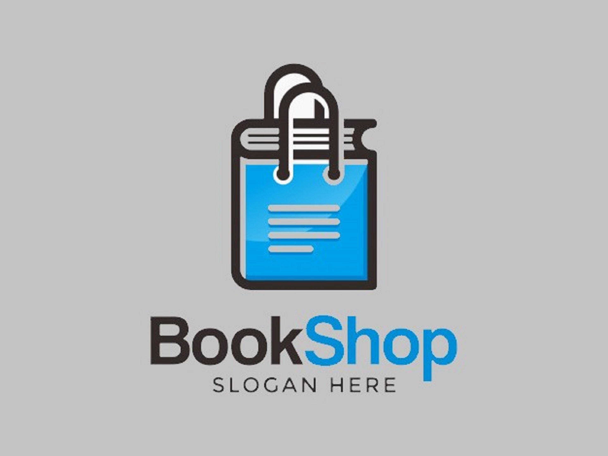
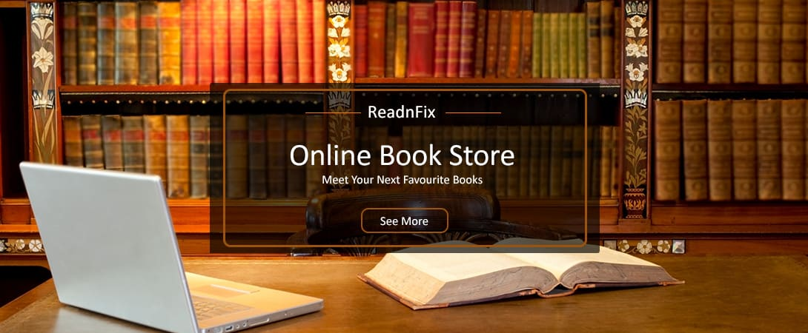

|  |  | ||||||||
| Home | Login | Shop | Category | Contact Us | |||||
We believe that bookstores are essential to a healthy culture. They’re where authors can connect with readers, where we discover new writers, where children get hooked on the thrill of reading that can last a lifetime. They’re also anchors for our downtowns and communities. As more and more people buy their books online, we wanted to create an easy, convenient way for you to get your books and support bookstores at the same time. If you want to find a specific local bookstore to support, find them on our map and they’ll receive the full profit off your order. Otherwise, your order will contribute to an earnings pool that will be evenly distributed among independent bookstores (even those that don’t use Bookshop). We also support anyone who advocates for books through our affiliate program, which pays a 10% commission on every sale, and gives a matching 10% to independent bookstores. If you are an author, a website or magazine, have a bookclub, an organization that wants to recommend books, or even just a book-lover with an Instagram feed, you can sign up to be an affiliate, start your own shop, and be rewarded for your advocacy of books. Bookshop wants to give back to everyone who promotes books, authors, and independent bookstores! By design, we give away over 75% of our profit margin to stores, publications, authors and others who make up the thriving, inspirational culture around books! We hope that Bookshop can help strengthen the fragile ecosystem and margins around bookselling and keep local bookstores an integral part of our culture and communities. Bookshop is a B-Corp - a corporation dedicated to the public good. |
Welcome To Book Shop |
This startup is based on a concept of necessity. It may sound fascinating to you that BookShop.com started in a public bus on the busy streets of Dhaka. We know that there are a lot of problems in our society but we have only limited resources to solve them. We have taken advantage of the limited resources available to create possible solutions for the problem around us. | |||||||
Developed By Radowan Hossain Sabbir |
|||||||||